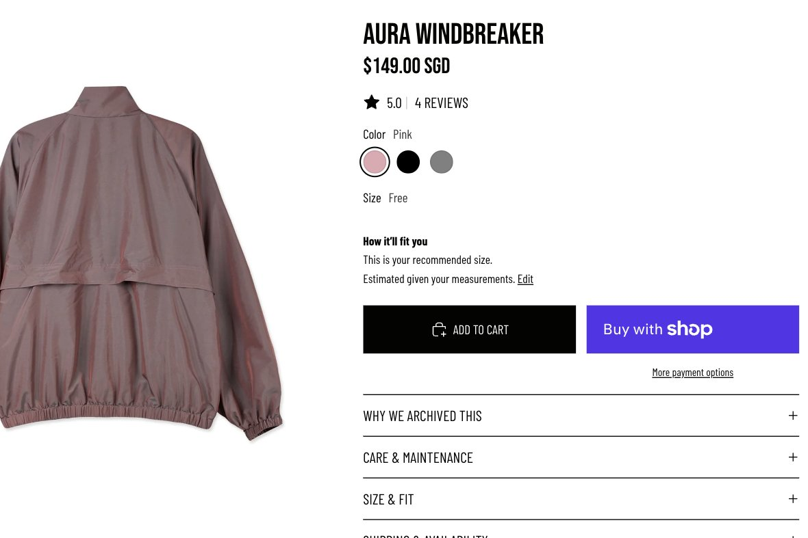
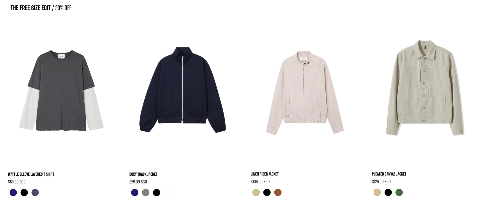
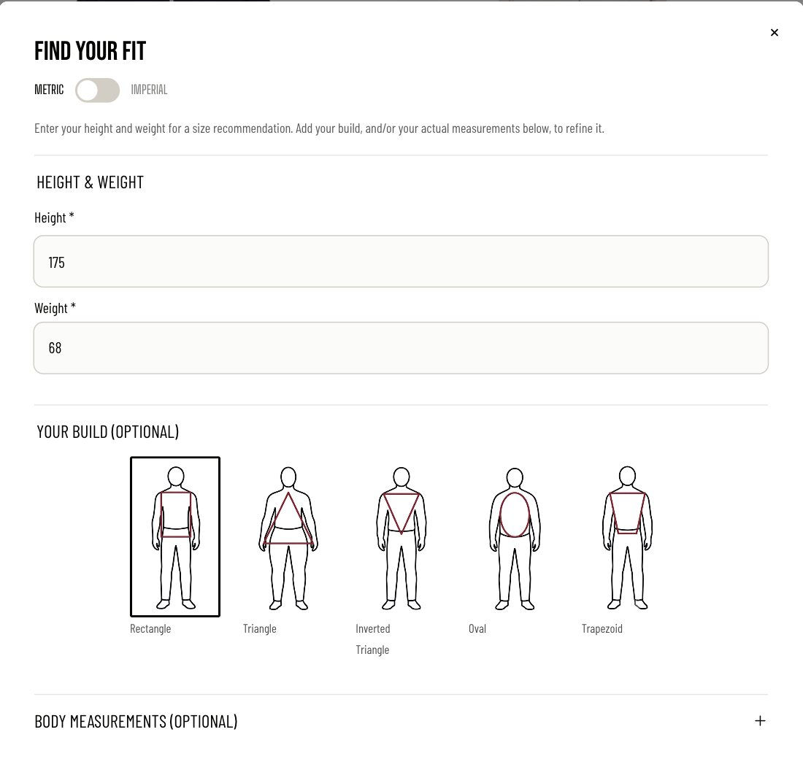
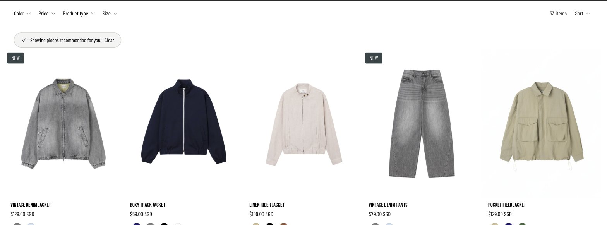
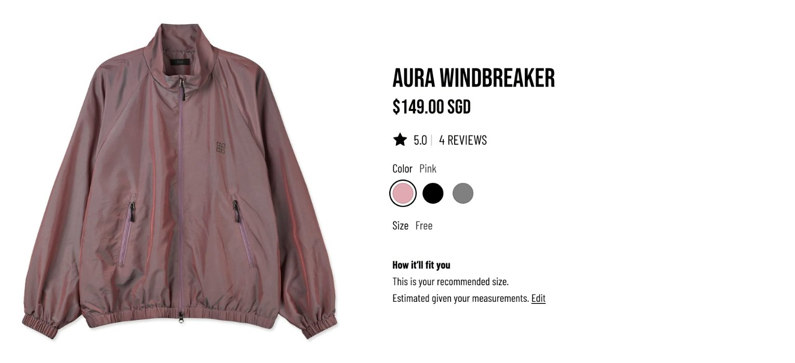

E-commerce, end to end
EVN Archive is a Shopify store for independent Korean menswear, which I design and run. This case covers the sizing tool I built to help people buy free-size clothing online with confidence.

Plenty of visits, very few carts
Free size pieces are some of the strongest designs in the archive. They were also the ones nobody bought.
Three free-size jackets had hundreds of visits between them, and almost nobody added one to cart. Buying clothes online already asks for some trust. Free size asks for more, because there's no size chart to lean on. People couldn't picture how a piece would sit on them, so they left.
A sizing tool that reads the garment
You tell it your height and weight. It tells you how each piece will fit you.
The sizing tool compares your numbers with each garment's own measurements and returns a fit read: snug, recommended or relaxed. Build and body measurements are optional, for people who want it exact.
It reads the Size & Fit copy that's already on every product page, so there's no separate database to keep in sync. A new product works the day it goes live, as long as its measurements are written properly.
A simplified version of the sizing tool, using one free-size jacket.
One recommendation, everywhere you shop
The sizing tool shows up at four points, so the answer follows you from the homepage to checkout.
-

HomepageThe Free Size Edit sits near the top, with a prompt to find your fit.
-

Find your fitHeight and weight are enough to start. Build and measurements refine it.
-

Your picksThe shop filters down to pieces recommended for you, and you can clear it anytime.
-

Product pageEvery product shows how it'll fit you, right above the button.
Moving people a step at a time
A sizing tool on its own doesn't sell a jacket. People need a few small reasons to say yes, in the places they already are.
Social judgment theory helped me frame this. People judge a new idea against what they already believe, their anchor. A message that lands close to it gets considered, and one that lands too far away gets brushed off. For free size, the anchor was usually "that won't fit me". So instead of one big push, I ran three things together, each a short step from where shoppers already were.
- Social mediaShow how free size works
Short videos on how free-size pieces use techniques like pleats, drawcords and dropped shoulders to fit a range of body types.
- 20% offMake trying one cheaper
A limited discount on every free-size piece, shown on the homepage and in the announcement bar, so a first try felt lower risk.
- Sizing toolKnow it'll fit
A fit read on every product page, so shoppers feel sure before they add to cart.
An illustration of the idea. Each touchpoint moves the shopper's anchor a little.
This applies well beyond clothing. A good product solution rarely lives on one screen. The feature does the heavy lifting, but the content and offers around it, on the product and off it, are what bring people close enough to use it.
Beyond the sizing tool
Running my own store means owning the whole experience. Here's the rest of it.
Categories and filters shaped around how people actually shop for clothes.
A small set of price tiers per garment type, so prices are easy to read at a glance.
Product copy for the whole catalogue, plus search titles and descriptions.
Storefront copy for Korea written fresh for local customers.
I answer every message myself, from sizing questions to shipping updates. It doubles as ongoing research.
A heavily customised Shopify theme. Every change is staged and reviewed before it goes live.
Got a checkout that needs this kind of care?
I'd love to hear what you're working on. Tell me where people get stuck and we'll figure it out from there.
Making crypto social
OKX · Fintech